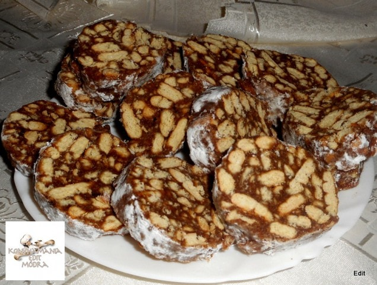
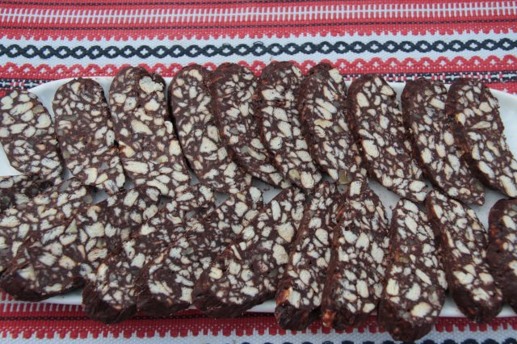

2 evőkanál erős kávé (lehetőség szerint eszpresszó)
100 g darált dió vagy mogyoró
100 g étcsokoládé (darált vagy apróra vágott)
1 teáskanál vanília kivonat
Opcionális: rumaroma vagy rum (1-2 evőkanál)

Elkészítés:
Kezdjük azzal, hogy a kakaós kekszet összetörjük. Ehhez tegyük a kekszet egy zacskóba, majd egy sodrófával törjük össze durvára. A kekszet kis darabokra is vagdolhatjuk.
A vajat egy lábasban vagy mikrohullámú sütőben olvasszuk meg. Adjuk hozzá a porcukrot, a kakaóport, az erős kávét, és keverjük simára a keveréket. Adjuk hozzá a vanília kivonatot és az opcionális rumaromát vagy rumot is.
Vegyük le a lábast a tűzről, majd adjuk hozzá a darált diót vagy mogyorót, a darált étcsokoládét, és végül a törött kekszet. Alaposan keverjük össze az összetevőket úgy, hogy a kekszdarabokat és a többi hozzávalót egyenletesen elosztjuk a keverékben.
Készítsünk egy hosszúkás formát vagy tekercset a masszából, és csomagoljuk be fóliába úgy, hogy szalámiformát kapjunk. A fólia segít abban, hogy a szalámi könnyen formázható és ne ragadjon.
Tegyük a csoki keksz szalámit a hűtőszekrénybe, és hagyjuk legalább 2-3 órán keresztül megdermedni.
Miután a szalámi megdermedt, vegyük ki a fóliából, és vágjuk kisebb szeletekre.
A csoki keksz szalámi kész is! Tálaljuk kávéval vagy teával.
Ez egy alapvető csoki keksz szalámi recept, de számos variációja létezik. Például hozzáadhatunk szárított gyümölcsöket, például mazsolát vagy aszalt szilvát, a masszához extra íz és textúra érdekében.
Csoki Keksz Szalámi Recept (Saját):
Hozzávalók:
2 dl tej
500 g háztartási keksz
150 g porcukor
50 g kakaópor
100 g vaj
2*38ml rum aroma

Elkészítés:
A csokoládés kekszszalámi elkészítéséhez a tejet elkeverjük a cukorral és a kakaóporral, majd felforraljuk. A tűzről levéve belekeverjük a vajat, majd hozzáadjuk a gőz felett felolvasztott csokoládét és a rumaromát.
A kekszet dupla zacskóba tesszük, és egy húsklopfolóval darabosra törjük. Ezután egy tálba tesszük, majd ráöntjük a krémet és elkeverjük, végül 3 rudat formázunk belőle.
A kiterített alufóliát meghintjük porcukorral, ráfektetjük a kekszszalámit, és becsomagoljuk. A másik 2 szalámival is ugyanígy járunk el. Hűtőbe tesszük legalább 10 órára és utána már kész is vagyunk.